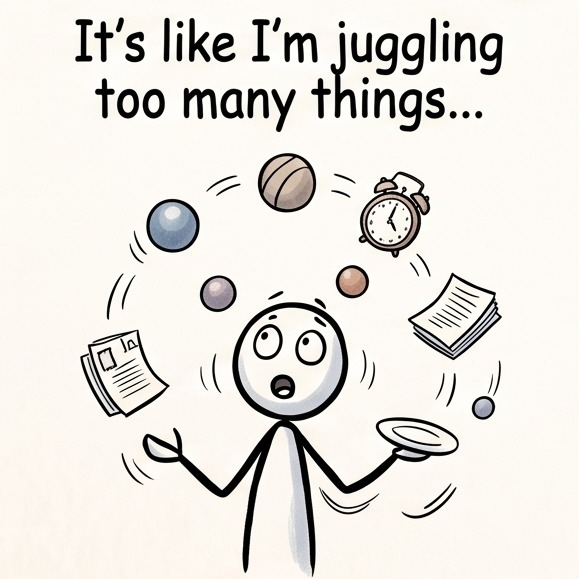

Employment Challenges
Choose any workplace or career scenario below and click Copy Scenario to copy the complete 3-part prompt into your Personos AI coaching window.
1. The Job Hunt
This is not actually my challenge, but if it was, what would you recommend?
"I have sent out dozens of resumes and cover letters over the last three months, but I rarely get a response. When I do get an interview, I get really nervous and feel like I'm rambling, and then I never hear back. I'm starting to lose confidence and worry that I'm unhireable or looking in the wrong places."
Give me a short insight about this challenge. Then, give me five creative next steps I could take to address this challenge. If I have content in the "Other Notes" section of Personos, use that content to customize the next steps so they are specific to me.

2. Career Stagnation
This is not actually my challenge, but if it was, what would you recommend?
"I've been in the same role for four years and I know the job inside and out, but I feel completely stuck. I see other people getting promoted or working on exciting new projects, but I keep getting passed over. I want to move up to the next level, but I don't know how to prove to my boss that I'm ready for more responsibility."
Give me a short insight about this challenge. Then, give me five creative next steps I could take to address this challenge. If I have content in the "Other Notes" section of Personos, use that content to customize the next steps so they are specific to me.

3. Difficult Workplace Dynamics
This is not actually my challenge, but if it was, what would you recommend?
"I really like the actual work I do, but the environment is becoming toxic because of a specific manager who micromanages everything and takes credit for my ideas. I dread going into the office on Mondays, and I spend so much energy navigating their mood swings that my actual productivity is suffering."
Give me a short insight about this challenge. Then, give me five creative next steps I could take to address this challenge. If I have content in the "Other Notes" section of Personos, use that content to customize the next steps so they are specific to me.

4. The Major Career Pivot
This is not actually my challenge, but if it was, what would you recommend?
"I've spent ten years building a career in this field, but I've realized I'm burned out and it doesn't align with my values anymore. I have a dream of switching to a totally different industry, but I'm terrified of taking a pay cut or starting over from the bottom when I have a mortgage and family to support."
Give me a short insight about this challenge. Then, give me five creative next steps I could take to address this challenge. If I have content in the "Other Notes" section of Personos, use that content to customize the next steps so they are specific to me.

5. Resignation and Departure
This is not actually my challenge, but if it was, what would you recommend?
"I have finally found a new opportunity and I know it's time to leave, but I am terrified of the resignation conversation. My team is understaffed, and I feel guilty for leaving them in a lurch. I want to leave on good terms without burning bridges, but I don't know how to word my notice or handle the exit interview gracefully."
Give me a short insight about this challenge. Then, give me five creative next steps I could take to address this challenge. If I have content in the "Other Notes" section of Personos, use that content to customize the next steps so they are specific to me.

Want to explore personal recovery & resilience prompts?
Switch over to our Rebuilding Life Challenges collection or return to the How To Use guide and THRiVE Coach tools.